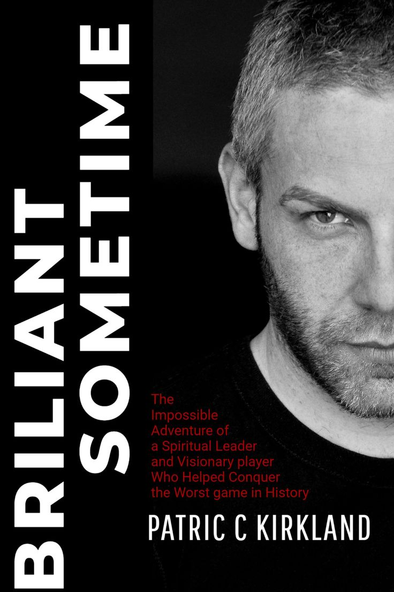
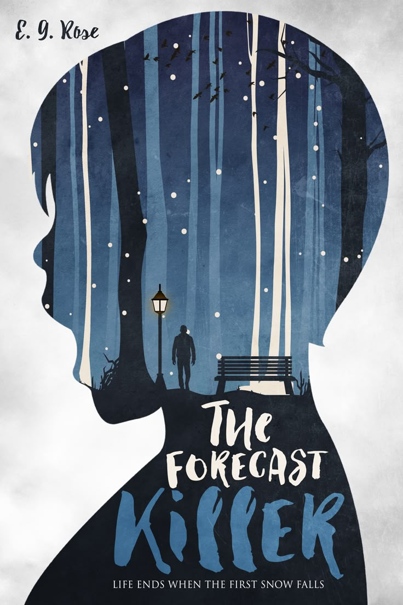

        <section style="padding: 32px; background-color: #fff;">
            <h2 style="font-size: 24px; margin-bottom: 16px;">Daftar Buku</h2>
            <div style="display: flex; gap: 16px; overflow-x: auto;">
                <div style="flex: 0 0 auto; width: 200px; background: #f9f9f9; padding: 16px; border-radius: 8px; box-shadow: 0 2px 4px rgba(0,0,0,0.1); text-align: center;">
                    
                    <h3 style="font-size: 18px; margin: 12px 0 4px;">Briliant</h3>
                    <p style="font-size: 14px; color: #555;">Ahmad Labib</p>
                </div>

                <div style="flex: 0 0 auto; width: 200px; background: #f9f9f9; padding: 16px; border-radius: 8px; box-shadow: 0 2px 4px rgba(0,0,0,0.1); text-align: center;">
                    
                    <h3 style="font-size: 18px; margin: 12px 0 4px;">Lost at Sea</h3>
                    <p style="font-size: 14px; color: #555;">Andika Abdillah</p>
                </div>

                <div style="flex: 0 0 auto; width: 200px; background: #f9f9f9; padding: 16px; border-radius: 8px; box-shadow: 0 2px 4px rgba(0,0,0,0.1); text-align: center;">
                    
                    <h3 style="font-size: 18px; margin: 12px 0 4px;">The Forecast Killer</h3>
                    <p style="font-size: 14px; color: #555;">Aji Banyu</p>
                </div>
            </div>
        </section>